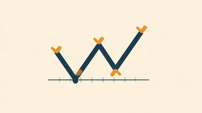

一般知識
NISA・iDeCo・証券口座比較など、特定の銘柄を推奨しない一般的な投資知識・比較コンテンツをまとめています。
生活防衛資金、いくら・どこに置くか——家族構成別に考える
生活防衛資金の目安と置き場所を、家族構成別の試算とともに整理した記事です。特定の商品や会社を勧める内容ではありません。
投資を始める前に、決めておくこと——順番だけ、静かに整理する
投資を始める前に決めておくことを、6つの順番で整理した入口の記事です。各論は別記事へ送ります。
積立投資と一括投資、何が違うのか——研究と制度から、静かに整理する
積立と一括の違いを、過去データの研究・公的機関の説明・新NISAの枠組みから整理しました。
外貨・ドル建て資産の基礎——通貨を分けて持つ、という考え方
外貨預金・外国債券・米国株式/ETF・外貨建て保険の種類、為替リスクとコストの仕組み、税金とNISAでの扱いを整理しました。
投資信託とETF、何が違うのか
投資信託とETF(上場投資信託)の取引方法・コスト構造・NISA/iDeCoでの扱い・分配金の課税の違いを整理しました。
iDeCo節税額シミュレーター
毎月の掛金・課税所得・拠出年数を入力するだけで、iDeCoの所得控除による節税額の目安を計算できる無料ツールです。
iDeCo・企業型DC・新NISA、会社員はどう組み合わせて考えるか
会社員が使える年金・資産形成制度の位置づけと、iDeCoと企業型DCを併用するときの条件・掛金上限を整理しました。
投資を始める考え方は、家計の「形」で変わる
20代独身から退職後まで、5つの架空の人物設定を通じて、家計の状況によって投資の考え方がどう変わるかを整理しました。特定の行動を指示する診断ではなく、考えるための材料の一つとして書いています。
NISAは、売った後にも手続きがある
NISA枠が戻るタイミング、配当金を非課税にする受取方式、確定申告、損益通算・繰越控除、米国株の二重課税と外国税額控除。売却後に知っておくと安心な制度知識をまとめました。

相場が下がったとき、何を確認すればいいか
下落の程度に応じて、一般的に検討される確認項目を整理しました。特定の行動を指示するものではなく、次にどうするかを自分で決めるための材料の一つとして書いています。
投資まわりの用語集
NISA・iDeCoなど投資の基礎用語と、暗号資産版シリーズで登場した専門用語をまとめました。記事を読んでいて出てきた言葉の意味を確認したいときに。
投資まわりの基礎知識クイズ
NISA・iDeCo・分散投資・複利など、投資の基礎知識を6問クイズで確かめられます。個別銘柄の診断ではなく、一般知識の理解度チェックです。結果はシェア画像として保存・投稿できます。
投資まわりのニュースまとめ
NISA・iDeCoなどの制度変更、日銀の金融政策、市場全体の動きなど、一般知識の範囲のニュースを気づいた時に日付付きで追記していくまとめページです。
証券口座はどう選ぶか
主要ネット証券5社を手数料・商品・ポイントの軸で比較。特定の1社を断定的に推さず、目的別の選び方を整理しました。
新NISAとiDeCo、どこが違うのか
非課税限度額・流動性・所得控除の違いを整理。「いつ使えるお金か」という軸で、目的別の考え方をまとめました。

不動産投資をはじめる前に、静かに整理しておきたい基礎知識
現物不動産・REIT・不動産クラウドファンディングの違い、利回りの見方、特有のリスク、基礎用語をまとめました。